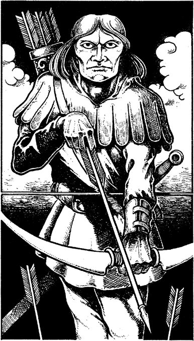

26
Your score qualifies you for a place in the final, for only one other archer has scored more than seven points. His name is Altan, a tall man with rugged features, a ranger from the mountains to the north. He wields a longbow of orange toa wood, and his skill with this weapon is formidable; it will be a difficult contest.

Altan: COMBAT SKILL 28 ENDURANCE (TARGET points) 50
The tournament final is played out using the normal rules for combat. 3 The only difference is that you begin with 50 ENDURANCE or TARGET points. Any ENDURANCE points that you may lose are deducted from these TARGET points (your normal ENDURANCE score remaining unchanged throughout the contest). The first one to lose all 50 of his TARGET points loses the tournament. (You need not erase any Arrows from your Action Chart during this tournament.)
If you are using the Jakan and pick a 0 from the Random Number Table at any time, turn immediately to 335.
If you are the first to lose all 50 TARGET points, turn to 183.
If Altan is the first to lose all 50 TARGET points, turn to 252.
Footnotes
[3] For this combat, you may not gain bonuses from a Shield or any weapon other than a Bow. In this case, Weaponmastery with Bow grants you the 3 COMBAT SKILL bonus points that Weaponmastery with mêlée weapons normally grants, rather than adding 3 to each Random Number pick (which would not work for the Combat Results Table). Other restrictions may apply, depending on your interpretation of the rules.